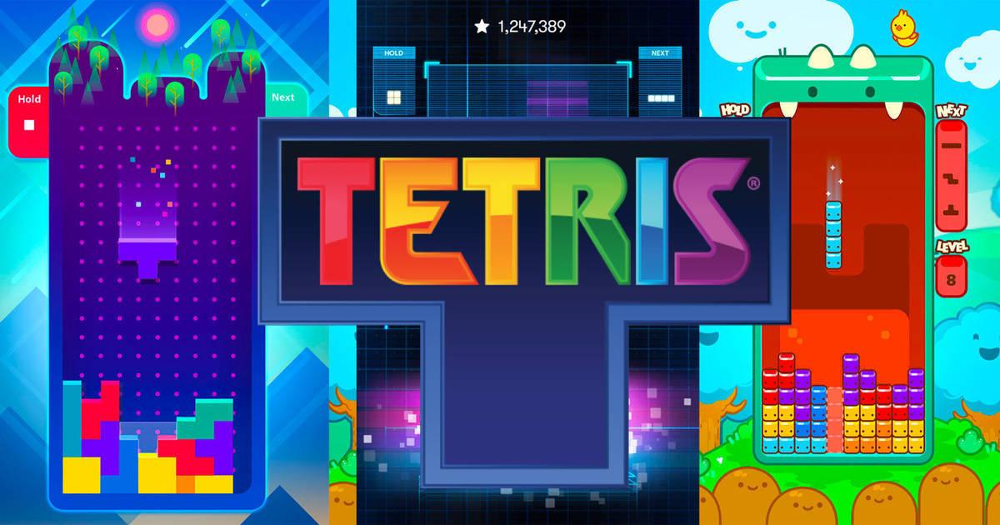

Tetris

The pieces can move to the right or to the left and can rotate on themselves between 0 and 360 degrees.
The game ends when pieces are accumulated until reaching the top, which is why no more pieces can be generated.
For more information you can see page: Tetris.com
POOBTriz
Our version, POOBTriz, has the following new features:
- 2 player and single player mode.
- Automatic player (Machine).
- Different types of speeds.
- Tetrominoes with different behaviors..
- Buffos.
- The scoring system will be based on the duration of the game and the number of blocks eliminated. Every second is equal to one point.
GAME
The playing field is finite, 10 X 20 horizontal and vertical respectively. Scores start at zero. For
only one chip comes out after the previous one has been positioned. The shape of the figure that comes out is
choose randomly. When the components of the tetrominoes come together to form a line
horizontal, this disappears making the pieces that were on them lower as much as possible.
Players must avoid accumulating a tower of chips, since this ends the game.
Player 1's controls will be A (Left), S (Faster Down), D (Right), W (Rotate Token), and .
(Use a buffo); and for player 2 it is the arrows on the keyboard.
PLAYERS
The following information must be kept for each player:
- Name: Player name.
- Color: Color of the playing field.
- Best game: Points for time and points for eliminated blocks.
GAME MODES
In POOBTriz you will have the following game modes:
- Single Player: This mode only has one game board.
- Player vs Player: In this mode each half of the screen will have a tetris board. The terms must be the same for the two boards. Buffs are shared by players.
- Player vs Machine: In this version one of the two players is automatic (Machine).
The machines may have the following profiles:
- Beginner: Moves randomly.
- Expert: The movements are those of an expert in the game.
SPEEDS
In POOBTriz you will also have to select the desired speeds:
- Uniform: Speed does not change throughout the game. The player indicates the desired speed.
- Accelerated: Every 10 seconds increases fall speed by 10 seconds. The initial time of fall is 1.2 seconds, this time will be the time it takes for the token to go down one level.
SPEEDS
In POOBTriz you will also have to select the desired speeds:
- Uniform: Speed does not change throughout the game. The player indicates the desired speed.
- Accelerated: Every 10 seconds increases fall speed by 10 seconds. The initial time of fall is 1.2 seconds, this time will be the time it takes for the token to go down one level.
TETROMINOES
In POOBTriz blocks will be used in five ways:
Tetrominoes can be of different types: they are recognized by their border.
Tetrominoes Edge Behaviour
Classic Black The classics.
Useless Silver If a line is completed with this block, the line will not disappear.
Winner Golden They become the best block for the place where they are located.
Bomb Red When the block is fixed it will self-destruct and destroy the blocks that it touches.
BUFFOS
The buffos will appear from time to time in a special space of the game area in a random
way so that the players at no time know how often a buff will appear or what type it will be.
There can only be a maximum of one buff on each playing field; that is, one is not generated
until the previous one is not used.
The buffos in question are the following:
Buffo Color
StopTime Yellow Makes the block not lower automatically for 3 seconds.
StopDiece Purple It stops the block and it will continue going down when the player presses the down key.
Slow Green The tiles start to drop slower for 3 seconds.
2x Orange For 3 seconds the token will go down at twice the normal speed.